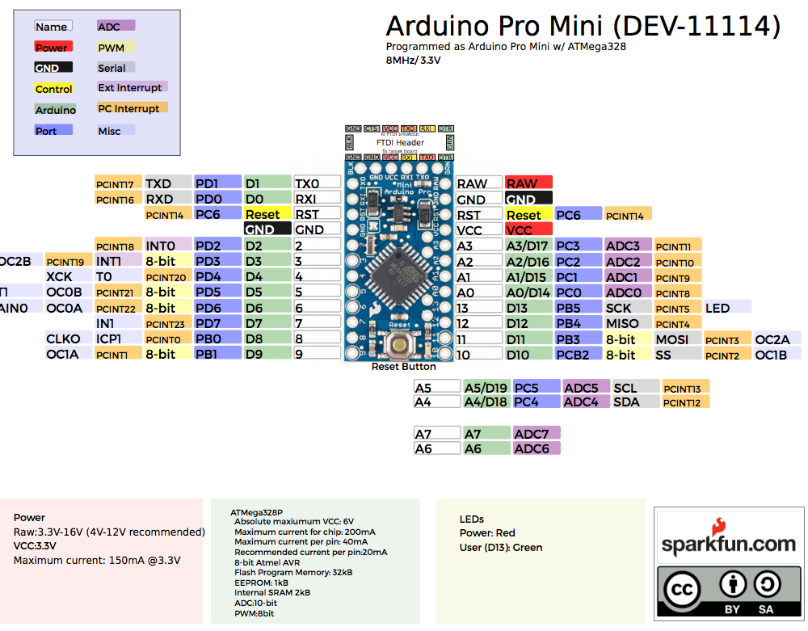

The compass (digital) HMC6352
Finding a path forward.
Having an absolute (within reason) bearing makes navigation significantly easier. When you command the bot to rotate 90 degrees you can actually measure it. This is a spark fun module, retired. The datasheet is here

{kind=link}
Motor Controller
I have moved the arduino for motor control onto the perfboard and cleaned up the wiring.
The battery pack needs some attention , 4 AAs providing 6V is workable for testing. However going forward it will need to be rechargeable (with the possiblility of steve recharging himself)
STEVE is looking neater and I have broken out six more pins up to the top level so I can experiment with the current sensing on the H-BRIDGE controller.

{kind=link}

{kind=link}
This is the dodgy remote used to control the H-Bridge contoller directly.
Differential control and navigation.
The outputs on the H-bridge are two speeds (8bits) and direction (1 bit each). The inputs will be compass heading and current used on each channel. It would also be an advantage to be able to measure the motor rotation, however on a brake steer platform the rotation compared to posistion will vary considerably. A photo interrupter or hall effect sensors to measure. I will have to manage the available ports on the Arduino carefully.
The external interface to the drive system will have three variables.
- Direction ( absolute magentic bearing ), measured by the compass.
- Speed, this will need to be ramped up and down to limit the current draw.
- Distance, measured from the motor rotation.
All three of the values should be piped through a PID controller of some kind to smooth and provide a closed loop. As the battery runs down the speed posted compared to the actual speed varies wildly.
Arduino Pro Mini
Pinout image

I moved the enable pin for the left drive from pin 10 to pin 3 so SS is freed up. The intent is to have the ProMini as an SPI slave from the TinyBX.
The compass still works I found an example sketch for the internet, code. When I was testing I was getting weird readings as I was rotating the bot. It turned out that there was a stack of Rare Earth magnets in my bits draw right behind it (whoops).